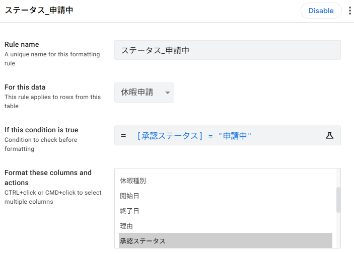
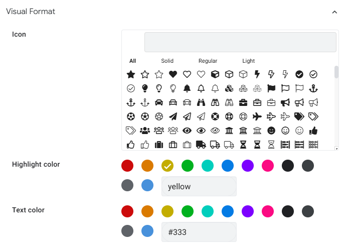
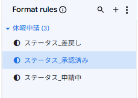
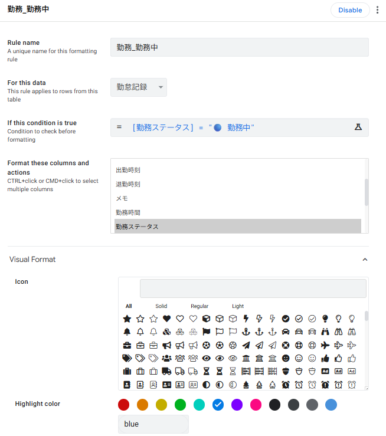
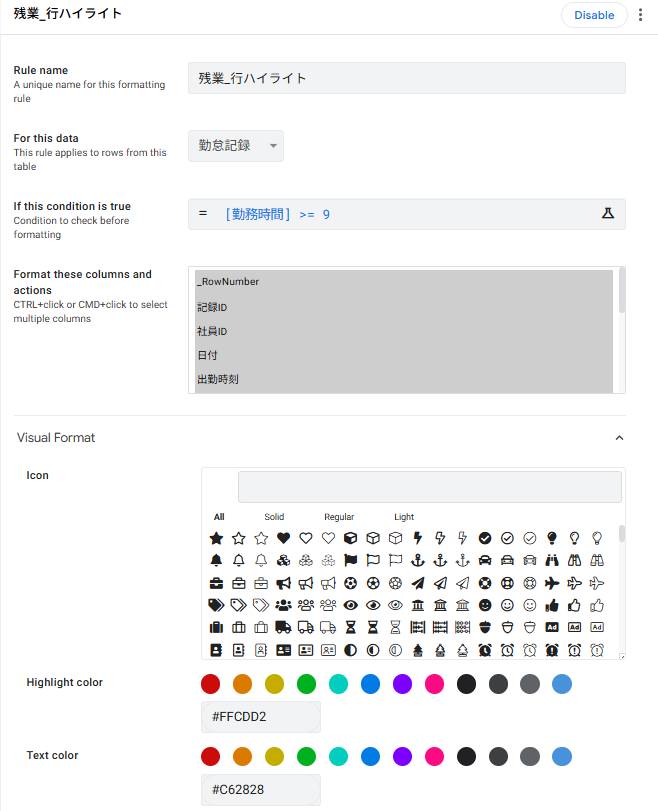
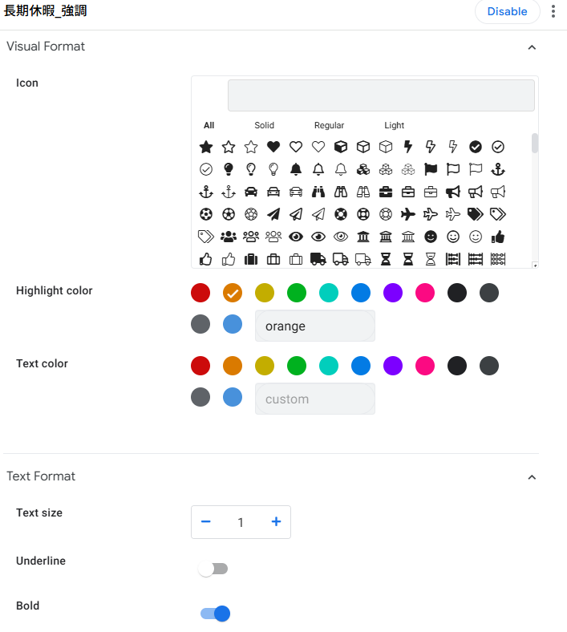
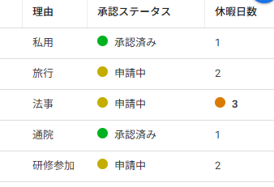
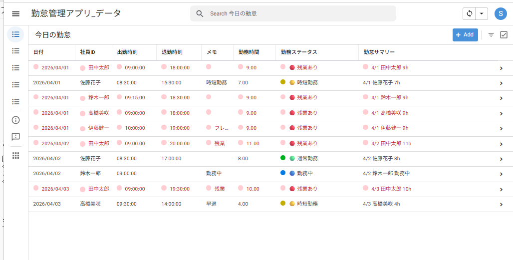

Format Rules で見た目を整えよう
6-1 Format Rules とは？
Format Rules は、条件に合致した行やセルの 背景色・テキスト色・アイコン・太字 を自動で変更できる機能です。データの意味を視覚的に伝えることで、ユーザーは一覧画面を一目見るだけで状況を把握できます。
■ Format Rules の仕組み
勤務時間 など
書式を決定
アイコン・太字
■ Format Rules でできること
| 設定項目 | 説明 | 使用例 |
|---|---|---|
| 背景色（Highlight color） | 条件に合致する行・セルの背景を塗りつぶす | 承認済 → 緑 |
| テキスト色（Text color） | 文字色を変更する | 差戻し → 赤文字 |
| アイコン（Icon） | セルの先頭にアイコンを表示する | 勤務中 → 🔵 |
| テキスト書式（Text format） | 太字・斜体・取り消し線を適用する | 残業あり → 太字 |
6-2 承認ステータスを色分けする
休暇申請テーブルの「承認ステータス」カラムに対して、値ごとに背景色を変える Format Rule を作成します。申請中・承認済み・差戻しの3つの状態を色で区別できるようにしましょう。
■ 設定する色の一覧
| ステータス値 | 背景色 | テキスト色 | 条件式 |
|---|---|---|---|
| 申請中 | 黄 | #333 | [承認ステータス] = "申請中" |
| 承認済み | 緑 | #333 | [承認ステータス] = "承認済み" |
| 差戻し | 赤 | #333 | [承認ステータス] = "差戻し" |
■ 設定内容（申請中の場合）
| 項目 | 設定値 |
|---|---|
| Rule name | ステータス_申請中 |
| For this data | 休暇申請 |
| If this condition is true | [承認ステータス] = "申請中" |
| Format these columns and actions | 承認ステータス（チェックを入れる） |
| Highlight color | 黄色 |
■ Format Rule の作成手順
左メニューの Views アイコン（📋）をクリックし、表示されるサブメニューから 「Format rules」 を選択します。
右パネル上部の 「＋」（New Format Rule） をクリックします。
上記の設定内容に従って各項目を入力します。
右上の Save をクリックして保存します。


■ 承認済み・差戻しも同様に作成
手順1〜4を繰り返し、「ステータス_承認済み」 を作成します。
条件：[承認ステータス] = "承認済み" 背景色：緑
同様に 「ステータス_差戻し」 を作成します。
条件：[承認ステータス] = "差戻し" 背景色：赤
右上の Save をクリックして保存します。

6-3 勤務ステータスに背景色を付ける
第5章で作成した Virtual Column「勤務ステータス」には既に絵文字（🔵🟢🔴🟡）が含まれていますが、Format Rules を使えばさらに 背景色 を加えて視認性を高められます。
■ 設定する色の一覧
| 勤務ステータス | 背景色 | 条件式 |
|---|---|---|
| 🔵 勤務中 | 青 | [勤務ステータス] = "🔵 勤務中" |
| 🟢 通常勤務 | 緑 | [勤務ステータス] = "🟢 通常勤務" |
| 🔴 残業あり | 赤 | [勤務ステータス] = "🔴 残業あり" |
| 🟡 時短勤務 | 黄 | [勤務ステータス] = "🟡 時短勤務" |
■ 設定内容（勤務中の場合）
| 項目 | 設定値 |
|---|---|
| Rule name | 勤務_勤務中 |
| For this data | 勤怠記録 |
| If this condition is true | [勤務ステータス] = "🔵 勤務中" |
| Format these columns and actions | 勤務ステータス（チェックを入れる） |
| Highlight color | 青 |
■ 作成手順
左メニューの Views アイコン（📋）をクリックし、表示されるサブメニューから 「Format rules」 を選択します。
上記の設定内容に従って各項目を入力します。
同様に残りの3つ（通常勤務・残業あり・時短勤務）も上の色一覧表を参考に作成します。
右上の Save をクリックして保存します。

6-4 残業ありの行をハイライトする
セクション6-3では「勤務ステータス」カラムだけを色分けしましたが、ここでは 行全体 をハイライトして、残業がある記録をさらに目立たせます。
■ 設定内容
| 項目 | 設定値 |
|---|---|
| Rule name | 残業_行ハイライト |
| For this data | 勤怠記録 |
| If this condition is true | [勤務時間] >= 9 |
| Format these columns and actions | すべてのカラムにチェックを入れる |
| Highlight color | 薄赤（#FFCDD2） |
| Text color | 濃い赤（#C62828） |
■ 作成手順
左メニューの Views アイコン（📋）をクリックし、表示されるサブメニューから 「Format rules」 を選択します。
上記の設定内容に従って各項目を入力します。
右上の Save をクリックして保存します。

6-3 で設定したカラム単位のルールと 6-4 の行全体のルールが競合する場合は、条件式を工夫して競合を回避する方法をおすすめします。例えば 6-3 の各ルールの条件に
AND(元の条件, [勤務時間] < 9) を追加すれば、勤務時間9時間以上のときはカラム単位ルールがマッチしなくなり、行ハイライトだけが適用されます。
6-5 休暇日数が長い申請を強調する
休暇申請テーブルで、休暇日数が3日以上 の申請を太字＋背景色で強調し、長期休暇の申請が一目で分かるようにします。
■ 設定内容
| 項目 | 設定値 |
|---|---|
| Rule name | 長期休暇_強調 |
| For this data | 休暇申請 |
| If this condition is true | [休暇日数] >= 3 |
| Format these columns and actions | 休暇日数（チェックを入れる） |
| Highlight color | オレンジ |
| Text format | Bold（太字）にチェック |
■ 作成手順
左メニューの Views アイコン（📋）をクリックし、表示されるサブメニューから 「Format rules」 を選択します。
上記の設定内容に従って各項目を入力します。
右上の Save をクリックして保存します。

6-6 動作確認とまとめ
すべての Format Rule の設定が完了しました。プレビュー画面で各設定が正しく動作するか確認しましょう。
■ 確認チェックリスト
- 休暇申請一覧：承認ステータスが黄・緑・赤で色分けされているか
- 勤怠記録一覧：勤務ステータスが青・緑・赤・黄で色分けされているか
- 勤怠記録一覧：勤務時間9時間以上の行全体が薄赤でハイライトされているか
- 休暇申請一覧：休暇日数3日以上のセルがオレンジ背景＋太字になっているか
- 承認ステータスの値を変更して、色がリアルタイムで切り替わるか
■ プレビューで確認


■ この章で作成した Format Rule 一覧
| No. | Rule name | 対象テーブル | 条件式 | 書式 |
|---|---|---|---|---|
| 1 | ステータス_申請中 | 休暇申請 | [承認ステータス] = "申請中" | 黄 |
| 2 | ステータス_承認済み | 休暇申請 | [承認ステータス] = "承認済み" | 緑 |
| 3 | ステータス_差戻し | 休暇申請 | [承認ステータス] = "差戻し" | 赤 |
| 4 | 勤務_勤務中 | 勤怠記録 | [勤務ステータス] = "🔵 勤務中" | 青 |
| 5 | 勤務_通常勤務 | 勤怠記録 | [勤務ステータス] = "🟢 通常勤務" | 緑 |
| 6 | 勤務_残業あり | 勤怠記録 | [勤務ステータス] = "🔴 残業あり" | 赤 |
| 7 | 勤務_時短勤務 | 勤怠記録 | [勤務ステータス] = "🟡 時短勤務" | 黄 |
| 8 | 残業_行ハイライト | 勤怠記録 | [勤務時間] >= 9 | 行全体（#FFCDD2） |
| 9 | 長期休暇_強調 | 休暇申請 | [休暇日数] >= 3 | + 太字 |
■ 第6章のまとめ
| No. | やったこと | ポイント |
|---|---|---|
| 1 | Format Rules の基本を理解 | 条件に応じて色・アイコン・書式を自動で変更する機能 |
| 2 | 承認ステータスの色分け | 値ごとに3つのルールを作成（黄・緑・赤） |
| 3 | 勤務ステータスの背景色 | Virtual Column にも Format Rules を適用できる |
| 4 | 残業行の行全体ハイライト | 全カラムにチェックを入れると行全体が塗られる |
| 5 | 長期休暇の強調 | 数値条件 + Bold で重要データを目立たせる |